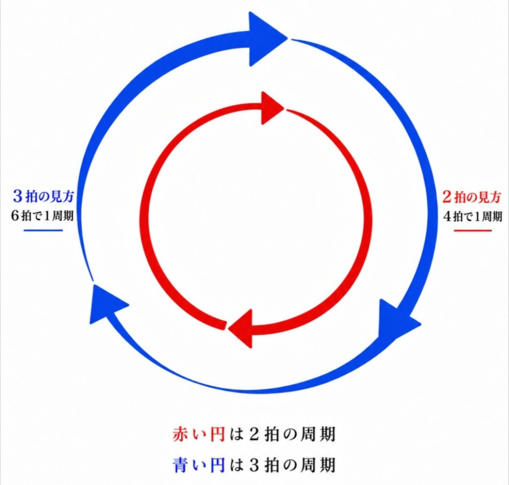

ポリグルーブ理論
人はなぜグルーブを感じるのか
はるか
Version 0.1
本書は現在も発展を続けている理論であり、Version 1.0へ向けて推敲・検証を重ねています。
目次
扉
人は音を聴いているのではない。
時間を感じているのである。
ページ上部へ戻る序文
私は長い間、一つの疑問を持ち続けてきた。
人は、なぜグルーブを感じるのだろう。
演奏の世界では、「グルーブ」という言葉が当たり前のように使われている。
しかし、その正体を言葉で説明しようとすると、とても難しい。
「ノリ。」
「フィーリング。」
「演奏すれば分かる。」
そうした説明は決して間違いではない。
けれど、それだけでは何かが足りないように感じていた。
私は、グルーブは偶然生まれるものではなく、人が時間を知覚し、予測し、共有することで生まれる現象なのではないかと考えるようになった。
その考えを少しずつ整理していく中で、この本の土台となるポリグルーブ理論が形になっていった。
もちろん、本書で述べる内容は、まだ完成された理論ではない。
一つの仮説であり、一つの提案である。
だからこそ、多くの演奏家や教育者、研究者との対話を通して、この理論がさらに深まり、新しい発見へつながっていくことを願っている。
もし本書が、読者にとって「グルーブとは何か」を改めて考えるきっかけとなるなら、それ以上に嬉しいことはない。
この本は、一つの答えを示すためではなく、一つの問いを共有するために書いた。
その問いを、これから皆さんと一緒に考えていきたい。
著者について
はるか
4月15日生まれ。
ページ上部へ戻るはじめに
グルーブとは何だろう。
音楽を演奏する人なら、一度はこの言葉を耳にしたことがあるだろう。
「ノリがいい。」
「ポケットに入っている。」
「スウィングしている。」
演奏の現場では、ごく当たり前のように使われる言葉である。
しかし、「グルーブとは何か」と問われると、明確に説明することは意外と難しい。
「感覚だから。」
「言葉では説明できない。」
「演奏すれば分かる。」
そう答える人も少なくない。
確かに、グルーブは感覚である。
しかし、感覚であることと、理解できないことは同じではない。
私は長い間、一つの問いを考え続けてきた。
人は、なぜグルーブを感じるのだろう。
本書は、この問いから始まる。
本書では、グルーブを「ノリ」や「雰囲気」といった曖昧なものとしてではなく、「時間」という視点から捉え直していく。
テンポとは何か。
リズムとは何か。
人はどのように時間を知覚し、予測し、共有しているのか。
そうした問いを積み重ねることで、グルーブという現象を新しい視点から理解できるのではないかと考えた。
本書で提案するポリグルーブ理論は、完成された理論ではない。
一つの仮説であり、一つの提案である。
しかし、この考え方が、演奏する人、教える人、研究する人、そして音楽を愛する人にとって、新しい視点をもたらすことができるなら、これほど嬉しいことはない。
ページ上部へ戻る人はなぜグルーブを感じるのか
音楽は、人が知覚する時間の中で生まれる
音楽は、時間の中でしか存在できない芸術である。
絵画は、一瞬で全体を見ることができる。
彫刻も、好きな角度から眺めることができる。
しかし音楽だけは違う。
最初の一音から最後の一音まで、時間の流れの中でしか存在できない。
だが、ここでいう時間とは、時計が刻む物理的な時間だけを意味しているのではない。
音楽は、人が知覚する時間の中で生まれる。
これが、本書の出発点である。
時間は人の中に存在する
同じテンポで演奏されていても、
速く感じる演奏もあれば、
ゆったりと感じる演奏もある。
数分の演奏が一瞬のように感じられることもあれば、
ほんの数秒が長く感じられることもある。
もし音楽が物理的な時間だけで成り立っているなら、このような違いは生まれないはずである。
つまり、音楽の時間とは、時計の中ではなく、人の知覚の中に存在している。
私たちは音を聴くだけではない。
時間そのものを感じながら音楽を体験しているのである。
人は未来の時間を予測している
音楽を聴いているとき、私たちは鳴った音だけを認識しているわけではない。
無意識のうちに、次の拍を待ち、次の音を予測している。
休符が続いても拍を見失わない。
演奏者同士が視線を交わさなくても演奏を続けられる。
それは、共通の時間を予測しているからである。
近年の脳科学では、人間の脳は受け身で世界を認識するのではなく、常に未来を予測しながら世界を理解しているという考え方が広く支持されている。
音楽もまた、その例外ではない。
私たちは音を待っているのではない。
時間を予測しているのである。
なぜ同じ譜面でもグルーブは変わるのか
ここで、一つ不思議なことがある。
同じ譜面。
同じテンポ。
同じリズム。
それにもかかわらず、演奏者が変わると、まったく違う印象を受けることがある。
「ノリがいい。」
「うねりがある。」
「ポケットに入っている。」
私たちは、その違いを確かに感じ取っている。
では、その違いはどこから生まれるのだろうか。
テンポだろうか。
リズムだろうか。
譜面だろうか。
その違いは、時間の感じ方にあるのではないだろうか。
演奏者が感じている時間。
聴き手が感じている時間。
その時間が重なったとき、私たちはグルーブを感じているのではないだろうか。
この本で目指すこと
本書は、「こう演奏すればグルーブが生まれる」という演奏マニュアルではない。
また、「このグルーブだけが正しい」と主張する本でもない。
本書で目指すのは、グルーブという現象を、
時間
周期
関係
予測
という視点から捉え直し、その背景にある共通原理を探ることである。
もちろん、本書で述べる内容は、一つの提案である。
これですべての音楽を説明できるとは考えていない。
しかし、この考え方が、演奏する人、教える人、研究する人、そして音楽を愛する人にとって、新しい視点となるなら、それ以上に嬉しいことはない。
次章では、本書全体の土台となる三つの言葉――テンポ、リズム、そしてグルーブ――を定義し、ポリグルーブ理論の出発点を整理していく。
ページ上部へ戻る基本定義
理論は定義から始まる
どのような理論も、まず言葉の定義から始まる。
同じ言葉を使っていても、その意味が人によって異なれば、議論はすれ違ってしまう。
「グルーブ」という言葉ほど、その意味が人によって異なる言葉は少ない。
ある人は「ノリ」と言う。
ある人は「気持ちよさ」と言う。
ある人は「スウィング感」だと言う。
どれも間違いではない。
しかし、それだけではグルーブという現象を十分に説明することは難しい。
そこで本章では、本書全体の土台となる三つの言葉を定義する。
テンポ
リズム
グルーブ
そして、これら三つの関係を「時間」という視点から捉え直す考え方を、本書では「ポリグルーブ理論」と呼ぶ。
テンポとは何か
テンポとは、時間の流れる速さである。
一般にはBPM（Beats Per Minute）という数値で表される。
しかし、演奏者が実際に感じているテンポは、単なる数字ではない。
身体の中で流れ続ける時間の基準である。
本書では、この身体の中に存在する時間の基準を内的パルスと呼ぶ。
演奏中、音が鳴っていない瞬間でも、この内的パルスは止まらない。
休符があっても拍を見失わないのは、身体の中で時間が流れ続けているからである。
テンポとは音ではない。
時間を感じるための基準なのである。
リズムとは何か
リズムとは、時間の中へ音を配置する規則である。
いつ音を鳴らすのか。
どれだけ音を伸ばすのか。
どこで休むのか。
テンポという時間の流れの上に、音をどのように配置するか。
それがリズムである。
言い換えれば、
テンポが「時間そのもの」であるなら、
リズムは時間の使い方である。
グルーブとは何か
本書では、グルーブを次のように定義する。
グルーブとは、周期的な時間構造が知覚され、予測され、共有されることで生まれる現象である。
ここで重要なのは、「音」ではなく「時間」である。
そして、その時間には周期が存在し、人はその周期を予測しながら音楽を体験している。
演奏者が時間を感じる。
聴き手も時間を感じる。
その時間構造が共有されたとき、私たちはグルーブを感じる。
つまり、グルーブとは音そのものではなく、人が知覚する時間構造の現象なのである。
周期的安定
本書では、グルーブを理解するための最も基本的な概念として「周期的安定」を用いる。
周期的安定とは、
時間構造が一定の周期で繰り返され、人がその繰り返しを予測できる状態を指す。
ここでいう「安定」とは、機械のような完全な一致を意味するものではない。
人が自然に次の時間を予測できる状態を意味している。
この安定があるからこそ、人は安心して時間の流れを感じることができる。
ポリグルーブとは何か
音楽には、一つの周期だけが存在しているわけではない。
拍を感じる周期。
フレーズが繰り返される周期。
アクセントの周期。
右手のピッキングダイナミクスの周期。
左手のビブラートの周期。
演奏者同士が共有する周期。
それぞれは独立して存在しながら、互いに影響し合っている。
本書では、この複数の周期が互いに関係し、一つの時間構造として知覚される現象を「ポリグルーブ」と呼ぶ。
「ポリ（Poly）」とは、「複数」を意味する言葉である。
つまり、ポリグルーブ理論とは、グルーブを一つの現象としてではなく、複数の周期が織り成す時間構造として捉える考え方なのである。
本章のまとめ
本章では、テンポ、リズム、グルーブという三つの基本概念を定義した。
次章では、この考え方を具体的な時間構造へ当てはめ、本書の出発点となる「2対3」のポリグルーブについて考えていく。
ページ上部へ戻る最も基本的なポリグルーブ
2対3という時間構造

一般に、2対3はポリリズムの最も基本的な形の一つとして説明される。
二拍と三拍という異なる周期を同時に演奏するリズムであり、世界中のさまざまな音楽文化に見ることができる。
本書でも、この説明そのものを否定するものではない。
しかし、ポリグルーブ理論では、2対3を単なる演奏技法としてではなく、人が時間を知覚する仕組みを理解するための最も基本的な時間構造として考える。
二拍と三拍は、それぞれ独立した周期を持っている。
しかし、人はそれらを別々のものとして認識しているわけではない。
身体は二つの周期を一つの時間構造として知覚し、予測しているのである。
最小公倍数が生み出す時間
二拍と三拍は、それぞれ異なる周期を持っている。
しかし、その関係は決して無秩序ではない。
二つの周期は、六拍ごとに再び一致する。
つまり、2と3の最小公倍数は6である。
ポリグルーブ理論では、この最小公倍数によって生まれる時間構造を、一つの大きな周期として捉える。
私たちが感じている「うねり」は、この大きな周期と深く関係していると考えられる。
だから2対3は、単に二つのリズムが重なっているだけではない。
二つの周期が一つの時間構造を形成している状態なのである。
アフリカから受け継がれた時間感覚
一般に、2対3の時間構造は、アフリカの伝統的な音楽文化の中で重要な役割を果たしてきたと考えられている。
その後、この時間感覚は、ブルース、ゴスペル、ジャズ、ロック、ファンク、ポップスなど、多くの音楽へ受け継がれていった。
もちろん、それぞれの音楽は独自の発展を遂げており、すべてを2対3だけで説明することはできない。
しかし、多くの音楽に共通する「うねり」の背景には、この時間構造が存在している可能性がある。
2対3は身体で理解する
2対3は、譜面を見て理解することもできる。
しかし、それだけでは十分ではない。
実際の演奏では、考えて演奏しているわけではないからである。
時間構造は、最終的には身体の感覚として身についている必要がある。
そのため本書では、第6章で2対3身体化トレーニングを紹介する。
理論を身体へ結び付けることも、ポリグルーブ理論の重要な目的の一つである。
ポリグルーブ理論の出発点
本書では、この2対3を出発点として理論を組み立てていく。
それは、2対3だけが特別だからではない。
複数の周期が関係を持ちながら一つの時間構造を形成するという現象を、最も分かりやすく観察できるからである。
時間。
周期。
関係。
予測。
2対3という最も基本的な時間構造の中には、本書全体を貫く考え方がすでに含まれている。
次章では、この「関係」に焦点を当て、周期同士がどのように新しいグルーブを生み出すのかを考えていく。
ページ上部へ戻る関係が生み出すグルーブ
グルーブは関係から生まれる
第3章では、2対3という最も基本的な時間構造について考えた。
そこでは、二拍と三拍という異なる周期が、一つの時間構造として知覚されることを見てきた。
ポリグルーブ理論では、この「関係」こそがグルーブの本質であると考える。
一般には、グルーブはリズムやノリとして語られることが多い。
もちろん、それは演奏を表現する言葉として間違いではない。
しかし、それだけでは「なぜグルーブが生まれるのか」を説明することは難しい。
ポリグルーブ理論では、
複数の周期が互いに関係を持ち、一つの時間構造として知覚されること
によって、グルーブが生まれると考える。
関係は新しい時間構造を生み出す
二拍と三拍は、それぞれ独立した周期を持っている。
しかし、人が感じているのは二拍でも三拍でもない。
二つの周期が関係することで生まれる、新しい時間構造である。
二拍。
三拍。
そして、その関係。
ポリグルーブ理論では、この「関係」そのものも一つの時間構造として捉える。
だから、グルーブとは一つの周期から生まれるものではない。
複数の周期が関係することで、新しい時間構造が知覚される現象なのである。
関係的安定
本書では、この状態を関係的安定と呼ぶ。
関係的安定とは、
複数の周期や位相の関係が一定に保たれ、人がその関係を自然に予測できる状態である。
ここでいう「安定」とは、機械のように完全に一致していることではない。
一定の関係が保たれていることが重要なのである。
スウィング。
レイドバック。
ポケット。
これらは、一見すると異なる現象に見える。
しかしポリグルーブ理論では、
位相差を含めた関係が安定している状態として理解できる可能性がある。
周期を強調するもの
グルーブそのものは周期から生まれる。
しかし、その周期をより強く知覚させる要素が存在する。
アクセント。
バックビート。
リフの繰り返し。
右手のピッキングダイナミクス。
左手のビブラート。
これらは新しい周期を作るものではない。
すでに存在している周期を強調し、人の予測を助ける働きを持っている。
だからこそ、同じテンポ、同じリズムでも、演奏者によってグルーブの印象は大きく変化するのである。
一人でもグルーブは生まれる
一般には、グルーブとは複数の演奏者がいて初めて生まれるものだと考えられることが多い。
リズム隊の一体感。
バンド全体のノリ。
演奏者同士の呼吸。
確かに、それらはグルーブを語る上で非常に重要である。
しかし、本当にグルーブは複数の演奏者がいなければ存在しないのだろうか。
一人で演奏しているギタリストにも、
ピアニストにも、
ドラマーにも、
私たちは確かにグルーブを感じる。
ポリグルーブ理論では、このことを次のように考える。
演奏者が一人であっても、
演奏者の身体の中には時間が流れている。
その時間と演奏との間には、常に関係が存在している。
つまり、一人の演奏とは、「演奏者」と「時間」との関係なのである。
その関係が安定して知覚され、
演奏者自身によって予測されているなら、
そこにはグルーブが生まれる。
つまり、独奏にもグルーブは存在する。
そして演奏者が二人になると、
それぞれが持つ時間構造に加え、
二人の関係という新しい時間構造が生まれる。
つまり、
演奏者A
演奏者B
AとBの関係
二人なら三つのグルーブが存在すると考えることができる。
さらに三人なら、
演奏者A
演奏者B
演奏者C
AとB
AとC
BとC
三人なら六つのグルーブが存在すると考えることができる。
演奏者が増えるほど、
共有される時間構造は増えていく。
そして、その関係が複雑になるほど、
音楽はより豊かなグルーブを持つようになる。
ポリグルーブ理論では、アンサンブルとは音を重ねることではなく、時間構造を共有することだと考える。
クオンタイズされた演奏について
現代の音楽制作では、演奏タイミングを機械的に揃えるクオンタイズが広く用いられている。
クオンタイズによって周期は非常に正確になる。
しかし、それだけで豊かなグルーブが生まれるとは限らない。
ポリグルーブ理論では、重要なのは「ズレ」ではなく、「関係」がどのように知覚されるかである。
完全に揃った演奏にもグルーブは存在する。
一方で、一定の位相差を保つことで生まれるグルーブも存在する。
つまり、グルーブとは誤差ではなく、関係的安定として理解できる現象なのである。
本章のまとめ
本章では、グルーブを「関係」という視点から考えてきた。
周期だけではなく、
周期同士の関係。
位相の関係。
演奏者と時間の関係。
演奏者同士の関係。
それらが一つの時間構造として知覚され、予測されるとき、グルーブが生まれる。
次章では、この時間構造が演奏者と聴き手の間でどのように共有されるのかを考えていく。
ページ上部へ戻る時間を共有するとグルーブは生まれる
音が鳴っている時間だけが音楽ではない
演奏を聴いていると、私たちは鳴っている音へ意識を向けがちである。
しかし、音楽は音だけでできているわけではない。
休符。
余韻。
次の音が鳴るまでの時間。
それらもまた、音楽を形づくる大切な要素である。
ポリグルーブ理論では、音が鳴っている時間だけでなく、鳴っていない時間も含めて一つの時間構造として考える。
だからこそ、演奏者は休符の間も演奏を続けているのである。
人は時間を共有している
演奏者が一人のときにもグルーブは存在する。
では、複数の演奏者が集まると何が起こるのだろうか。
一般には、「息が合っている」「ノリが合っている」と表現されることが多い。
もちろん、それは間違いではない。
しかし、ポリグルーブ理論では、それを「時間構造の共有」として捉える。
演奏者同士は、音だけを聴いているのではない。
共通の時間を感じ、
その時間を予測し、
互いに共有しているのである。
聴き手もまた演奏に参加している
グルーブを共有しているのは演奏者だけではない。
聴き手もまた、その時間構造へ参加している。
足で拍を刻む。
身体が自然に揺れる。
次のアクセントを無意識に待っている。
これらはすべて、時間構造を共有していることの表れである。
演奏者と聴き手。
立場は違っていても、同じ時間の流れを共有している。
だからこそ、ライブ会場では会場全体が一つになったような感覚が生まれるのである。
グルーブは共有によって育つ
一人でもグルーブは存在する。
しかし、共有されることで、そのグルーブはさらに豊かになる。
演奏者同士。
演奏者と聴き手。
そして会場全体。
共有される時間構造が増えるほど、グルーブはより大きな広がりを持つようになる。
だからアンサンブルとは、単に人数が増えることではない。
共有される時間が増えることで、新しいグルーブが育っていく過程なのである。
グルーブは音ではなく、共有された時間構造である
ここまで本書では、
時間。
周期。
関係。
予測。
という四つの視点からグルーブを考えてきた。
そして、最後に残るのが「共有」である。
時間が知覚され、周期が生まれ、関係が築かれ、未来が予測される。
その時間構造が演奏者と聴き手の間で共有されたとき、私たちはグルーブを感じる。
ポリグルーブ理論では、グルーブとは音そのものではない。
共有された時間構造として知覚される現象なのである。
本章のまとめ
第5章では、「共有」という視点からグルーブを考えた。
音楽は、一人で完結するものではない。
演奏者も、
聴き手も、
同じ時間を感じ、
同じ時間を予測し、
同じ時間を共有している。
だから音楽とは、時間を共有する芸術なのである。
次章では、この時間構造をどのように身体へ定着させるのか、2対3身体化トレーニングを通して考えていく。
ページ上部へ戻るポリグルーブを身体化する
理解することと、演奏できることは違う
ここまで本書では、
時間。
周期。
関係。
予測。
共有。
という視点からグルーブを考えてきた。
しかし、理論を理解しただけでは演奏は変わらない。
音楽は身体を使って表現する芸術だからである。
理論は、身体へ定着して初めて演奏の中で生きる。
これが、本章で最も伝えたいことである。
このトレーニングが生まれたきっかけ
私は0歳から15歳までをアメリカ・フロリダで過ごした。
幼い頃から、ブルース、ゴスペル、カントリー、ロック、ポップスなど、さまざまな音楽に囲まれて育った。
当時は意識していなかったが、その環境の中で、2対3を基盤とする時間感覚が自然に身体へ染み込んでいたのだと思う。
その後、日本で高校生へ音楽を教える機会があった。
そこで私は、一つのことに気付いた。
私にとって自然だった時間感覚は、必ずしも誰もが同じように身体で感じているわけではなかったのである。
もちろん、それは能力の違いではない。
育ってきた音楽環境や、日常の中で触れてきたリズムの違いによるものだと私は考えている。
では、どうすればこの時間構造を身体へ伝えられるのだろう。
どうすれば「説明」ではなく、「体験」として身につけられるのだろう。
その問いから、このトレーニングは生まれた。
2対3身体化トレーニング
①
クリックに合わせて、足で四分音符を踏み続ける。
足は最後まで止めない。
②
足を踏み続けながら、
右手、左手、右手・左手、右手、左手・
右手、左手、右手・左手、右手、左手
を三連符で繰り返す。
ここでは速く叩くことではなく、一定の時間構造を維持することを意識する。
③
慣れてきたら、
左手は指先で軽く触れる程度にする。
左手の動きを弱くしても、身体の中の時間構造は止めない。
④
さらに慣れたら、
左手だけを止める。
音は消えても、左手の周期は身体の中で感じ続ける。
⑤
右手と足だけで続ける。
鳴っていない周期も、身体の中では流れ続けていることを意識する。
⑥
テンポを変えても同じように演奏できるまで繰り返す。
速くても、
遅くても、
身体の中の時間構造は変わらない。
このトレーニングで身につけたいこと
この練習の目的は、
三連符を速く叩くことではない。
身体の中へ二つの周期を同時に存在させることである。
左手を止めても、
その周期は消えない。
音が鳴っていなくても、
時間構造は存在し続ける。
これこそが、第5章で述べた「鳴っていない時間も共有される」という考え方を、身体で体験する瞬間なのである。
理論は身体へ戻る
本書で述べてきた時間構造は、
頭で理解するためだけのものではない。
演奏するためのものである。
理論は身体へ戻り、身体は再び音楽となって表現される。
その循環こそが、ポリグルーブ理論の目指す姿である。
本章のまとめ
ポリグルーブ理論は、
知識として覚えるための理論ではない。
身体の中へ時間構造を育てるための理論である。
2対3を身体で感じられるようになったとき、本書で述べてきた「時間」「周期」「関係」「予測」「共有」は、一つの体験として結び付いてくる。
次章では、この時間構造がシャッフル、スウィング、レイドバック、バックビート、ポケット、縦ノリ、横ノリなど、さまざまなグルーブとしてどのように現れるのかを考えていく。
ページ上部へ戻るグルーブの多様性
ここまで本書では、グルーブを「時間」「周期」「関係」「予測」、そして「共有」という視点から考えてきた。
この章では、その考え方を、演奏現場で日常的に使われている言葉へ当てはめてみたい。
シャッフル。
スウィング。
レイドバック。
バックビート。
ポケット。
縦ノリ。
横ノリ。
これらは、それぞれ独立した概念として語られることが多い。
しかし、ポリグルーブ理論では、それらは互いに無関係な現象ではなく、一つの時間構造を異なる角度から見たものとして捉える。
本章では、まず一般的な説明を紹介し、その上でポリグルーブ理論ではどのように考えられるのかを見ていきたい。
2対3
一般には、2対3は「ポリリズムの基本」と説明されることが多い。
二拍と三拍という異なる周期を同時に演奏する、最も基本的なポリリズムの一つである。
この説明は、演奏技法としては正しい。
しかし、ポリグルーブ理論では、2対3を単なる演奏技法ではなく、人が時間を知覚し、予測する最も基本的な時間構造として考える。
二拍と三拍は、それぞれ独立した周期を持っている。
しかし、人はそれらを別々のものとしてではなく、一つの大きな時間構造として感じ取ることができる。
だからこそ、2対3は本書における最も基本的なポリグルーブなのである。
シャッフル
一般には、シャッフルは「三連符の二つ目を抜いたリズム」と説明されることが多い。
これは演奏方法を理解するためには、とても分かりやすい説明である。
しかし、この説明だけでは、なぜシャッフル特有のグルーブが生まれるのかまでは説明できない。
ポリグルーブ理論では、シャッフルとは音価そのものではなく、2拍と3拍という異なる周期が安定した関係を保つことで生まれる時間構造として考える。
重要なのは「三連符の中抜き」という形ではない。
その背後にある時間構造なのである。
スウィング
一般には、スウィングは「ター・タ」のように、一拍目を長く、二拍目を短く演奏すると説明されることが多い。
これはスウィングを体験する入口として有効な説明である。
しかし実際には、その長短比率は一定ではない。
テンポによっても、
演奏者によっても、
さらには同じ演奏の中でも変化し続けている。
それでも私たちは「スウィングしている」と感じる。
ポリグルーブ理論では、スウィングとは一定の比率ではなく、関係的安定を保ちながら位相が柔軟に変化している状態として考える。
変化しているにもかかわらず、その変化が予測可能である。
そこにスウィング特有の心地よさが生まれるのである。
レイドバック
一般には、レイドバックとは「拍より少し後ろで演奏すること」と説明されることが多い。
もちろん、それは演奏感覚を伝えるためには分かりやすい。
しかし、「少し後ろ」とはどれくらいなのか、その説明だけでは明確ではない。
ポリグルーブ理論では、レイドバックとは一定の位相差を保ち続けることで生まれる関係的安定として考える。
重要なのは、遅れることではない。
毎回ほぼ同じ関係を維持することである。
もし遅れ方が毎回ばらばらであれば、それは位相差ではなく誤差になる。
だからレイドバックとは、「遅れている演奏」ではなく、安定した時間構造なのである。
ここまで見てきたように、シャッフル、スウィング、レイドバックは、それぞれ異なる演奏方法として説明されることが多い。
しかし、ポリグルーブ理論では、それらはすべて異なる周期と位相の関係が生み出す時間構造として理解することができる。
次に見ていくバックビートやポケットは、その時間構造をさらに強く知覚させ、演奏者同士が共有するための重要な要素となる。
バックビート
一般には、バックビートとは4/4拍子における2拍目と4拍目を強調する演奏と説明されることが多い。
この説明は演奏方法としては正しい。
しかし、なぜバックビートがグルーブを強く感じさせるのかまでは説明していない。
ポリグルーブ理論では、バックビートは周期を強調するアクセント構造として考える。
アクセントそのものが新しい周期を作るわけではない。
しかし、すでに存在している周期を身体へ明確に提示し、人の予測を助ける働きを持つ。
バックビートによって拍の流れがより鮮明になり、演奏者も聴き手も同じ時間構造を共有しやすくなる。
つまり、バックビートは周期を作るものではなく、周期を際立たせるものなのである。
ポケット
一般には、「ポケットに入っている」とは、リズム隊の息がぴったり合っている状態、あるいは演奏者同士が心地よくまとまっている状態を指すことが多い。
しかし、本当に重要なのは、全員がまったく同じタイミングで演奏することではない。
ポリグルーブ理論では、ポケットとは複数の演奏者が共通の時間構造を共有し、それぞれが安定した関係を保っている状態と考える。
少し前で演奏する人がいてもよい。
少し後ろで演奏する人がいてもよい。
それぞれの位相差が安定し、一つの時間構造として共有されているなら、そこには強いポケットが生まれる。
ポケットとは「一致」ではなく、「共有された関係的安定」なのである。
縦ノリと横ノリ
一般には、縦ノリとは拍を明確に感じる演奏、横ノリとは「うねるようなグルーブ」を持つ演奏として説明されることが多い。
この説明は演奏感覚を共有するためには非常に分かりやすい。
しかし、「なぜその違いが生まれるのか」までは説明していない。
ポリグルーブ理論では、縦ノリと横ノリは、どの周期がより強く知覚されているかの違いとして考える。
縦ノリでは、偶数拍を基準とした周期的な安定が前面に現れる。
拍ごとの推進力が強く感じられ、時間は力強く前へ進んでいく。
一方、横ノリでは、複数の周期が関係的安定を保ちながら重なり合い、その結果として生まれる最小公倍数拍周期の大きな時間構造が強く知覚される。
例えば2対3であれば、そのうねりは6拍周期として感じられる。
つまり横ノリとは、一拍ごとの推進力だけではなく、その背後で繰り返される、より大きな時間構造を身体が感じている状態なのである。
ここで重要なのは、実際の音楽は縦ノリか横ノリかのどちらか一方だけで成り立っているわけではないということである。
多くの演奏には、偶数拍周期による推進力と、最小公倍数拍周期による大きなうねりの両方が存在している。
違いは、そのどちらの成分がより強く知覚されるかにある。
偶数拍周期の成分が前面に現れれば、私たちはその演奏を縦ノリと感じる。
最小公倍数拍周期の成分が前面に現れれば、横ノリと感じる。
つまり、縦ノリと横ノリは互いに対立する概念ではない。
同じ音楽の中に共存し、その割合や強調のされ方によって演奏全体の印象が変化しているのである。
そして、その印象をさらに強めるのが、アクセントやリフの繰り返しである。
例えば、偶数拍周期を基準としたリフが繰り返されると、その周期はより強く知覚され、縦ノリの印象はさらに明確になる。
一方、2対3の関係を感じさせるフレーズやアクセントが繰り返されると、最小公倍数拍周期による大きな時間構造が際立ち、横ノリの印象はより強くなる。
リフやアクセントは新しいグルーブを作るのではない。
すでに存在している時間構造を強調し、聴き手の予測を助ける役割を担っているのである。
それぞれの名前は違っても、流れている時間は一つである
ここまで見てきたように、
シャッフル。
スウィング。
レイドバック。
バックビート。
ポケット。
縦ノリ。
横ノリ。
これらは演奏方法も、文化的背景も、それぞれ異なる。
しかし、ポリグルーブ理論では、それらは互いに独立した現象ではない。
時間。
周期。
関係。
予測。
共有。
これらの視点から見れば、それぞれは同じ時間構造の異なる表れ方として理解することができる。
名前は違っても、流れている時間は一つである。
そして、その時間を人が知覚し、予測し、共有したとき、私たちはグルーブを感じるのである。
ページ上部へ戻るポリグルーブ理論が目指すもの
理論は音楽を縛るためのものではない
「理論」という言葉を聞くと、「ルール」や「正解」を思い浮かべる人もいるかもしれない。
しかし、私はそうは考えていない。
理論とは、音楽を縛るためにあるものではない。
音楽を理解するためにあるものである。
音楽が理論に従って生まれるのではない。
音楽が先にあり、その後から理論が生まれる。
理論とは、すでに存在している音楽を理解しようとする試みなのである。
ポリグルーブ理論も、その一つに過ぎない。
世界には、多様な時間の感じ方がある
現在、「音楽理論」と呼ばれているものの多くは、西洋音楽の歴史の中で整理され、体系化されてきた理論である。
もちろん、それらは音楽を学ぶ上で非常に重要であり、多くの優れた知見を与えてくれる。
しかし、世界には西洋音楽だけでは説明しきれない、多様な時間感覚やリズム文化が存在している。
アフリカのリズム。
インドのターラ。
中東のリズム。
ラテン音楽。
そして、ブルースやジャズ、ロック、ファンク、ポップスへと受け継がれてきたグルーブ。
ポリグルーブ理論は、それらを一つの価値観へ統一するための理論ではない。
時間という共通の視点から、それぞれの音楽を理解してみようという提案である。
グルーブは学ぶことができる
「グルーブは才能だ。」
「生まれつき持っている人にしか出せない。」
そう考える人もいる。
確かに、生まれ育った環境によって、身体へ自然に染み込む時間感覚は異なる。
しかし、それだけですべてが決まるわけではない。
私は、高校生へ音楽を教えた経験から、一つのことを確信した。
時間感覚は育てることができる。
グルーブもまた、学ぶことができる。
だからこそ、本書では理論だけではなく、身体化トレーニングも紹介した。
理解と体験。
その両方がそろったとき、時間構造は初めて演奏の中で生きてくるのである。
感覚を言葉にする意味
演奏現場では、
「もっとノッて。」
「もっと後ろ。」
「もっとポケットに入って。」
という言葉が使われることが少なくない。
経験を積んだ演奏者同士であれば、その言葉だけで伝わることもある。
しかし、初めて学ぶ人にとっては、何をどう変えればよいのか分からないことも多い。
本書で提案した「時間」「周期」「関係」「予測」「共有」という考え方は、そうした感覚を少しでも言葉として共有しやすくするためのものである。
言葉は、感覚を制限するためではなく、感覚を共有するためにある。
この理論は、ここから育っていく
本書で提案したポリグルーブ理論は、完成された理論ではない。
一つの仮説であり、一つの見方である。
だからこそ、多くの演奏家、教育者、研究者によって検証され、新しい発見が加えられていくことを願っている。
理論とは、答えを増やすためだけではない。
新しい問いを生み出すためにも存在するのである。
本章のまとめ
ここまで本書では、「人はなぜグルーブを感じるのか」という問いを追い続けてきた。
その答えは、一つではないのかもしれない。
しかし、「時間」という視点から音楽を見つめ直すことで、新しい景色が見えてくる。
次章では、ポリグルーブ理論のこれからの可能性について考えてみたい。
ページ上部へ戻るこれからの音楽へ
理論は終わりではなく始まりである
本書では、「人はなぜグルーブを感じるのか」という問いから出発し、時間という視点から音楽を見つめ直してきた。
時間。
周期。
関係。
予測。
共有。
これらの考え方を通して、グルーブという現象を新しい角度から理解しようと試みてきた。
しかし、この本で述べたことが、すべての音楽を説明できるとは考えていない。
ポリグルーブ理論は、一つの答えではなく、一つの出発点である。
音楽は変わり続ける
音楽は、時代とともに姿を変えてきた。
新しい楽器が生まれ、
新しい文化が出会い、
新しい表現が生まれる。
そのたびに、人が感じるグルーブもまた少しずつ変化してきた。
だから理論もまた、変わり続ける必要がある。
理論は音楽の未来を決めるものではない。
音楽の変化に寄り添いながら、ともに育っていくものである。
教育のための理論
私は、この理論が教育の現場でも役立つことを願っている。
「センスだから。」
「慣れるしかない。」
そう言われてきたことの中にも、言葉で共有できる部分があるかもしれない。
もちろん、言葉だけで音楽は身につかない。
しかし、言葉と体験が結び付いたとき、学びはより深くなる。
理論と身体は対立するものではなく、互いに支え合う存在なのである。
音楽を愛するすべての人へ
この本は、演奏家だけのために書いたものではない。
教える人。
学ぶ人、研究する人。
そして、音楽を聴くことが好きな人。
すべての人が、それぞれの立場で「時間」という視点から音楽を見つめ直すきっかけになれば嬉しい。
グルーブは、演奏者だけのものではない。
時間を共有するすべての人の中に存在している。
本章のまとめ
本書は、一つの理論を完成させるために書かれたものではない。
音楽について、新しい問いを共有するために書かれたものである。
次の終章では、本書全体を一つの言葉へまとめたい。
ページ上部へ戻る音楽とは時間を共有する芸術である
本書は、「人はなぜグルーブを感じるのか」という一つの問いから始まった。
その問いを追い続ける中で、私はグルーブを「時間」という視点から見つめ直してきた。
時間。
周期。
関係。
予測。
共有。
これらは、それぞれ独立したものではない。
一つの時間構造として結び付き、人がそれを知覚するとき、私たちは音楽を音の集まりとしてではなく、一つの流れとして感じ始める。
グルーブとは、音そのものではなく、人が知覚し、予測し、共有する時間構造から生まれる現象なのではないだろうか。
もちろん、この考え方だけで、すべての音楽を説明できるとは思っていない。
世界には多様な音楽があり、多様な文化があり、多様な時間感覚が存在する。
ポリグルーブ理論は、それらを一つの理論へ統一するためのものではない。
時間という共通の視点から、それぞれの音楽を理解しようとする、一つの提案である。
この理論が正しいかどうかは、これから多くの演奏や研究、そして対話の中で育っていくだろう。
私は、それで良いと思っている。
理論とは、完成した瞬間に止まるものではない。
音楽とともに成長し続けるものだからである。
もし本書が、読者にとって音楽を少し違う角度から見つめ直すきっかけとなり、「人はなぜグルーブを感じるのか」という問いを共有するきっかけとなるなら、それ以上に嬉しいことはない。
そして最後に、本書を通して私が最も伝えたかったことを、もう一度ここに記したい。
音楽は、人が知覚する時間の中で生まれる。
音楽とは、時間を共有する芸術である。
ページ上部へ戻るポリグルーブ理論 10の原則
第1原則
音楽は、人が知覚する時間の中で生まれる。
音楽は物理的な時間だけではなく、人が知覚する時間の中で初めて音楽として成立する。
第2原則
テンポは、時間を感じるための基準である。
テンポとは単なるBPMではなく、演奏者や聴き手の身体の中で流れ続ける内的パルスである。
第3原則
リズムとは、時間の中へ音を配置することである。
リズムは時間そのものではなく、時間をどのように用いるかという構造である。
第4原則
グルーブとは、周期的な時間構造が知覚され、予測され、共有されることで生まれる現象である。
本書では、グルーブを「音」ではなく「時間構造」として捉える。
第5原則
複数の周期は、互いに関係することで新しい時間構造を生み出す。
ポリグルーブとは、この複数の周期が一つの時間構造として知覚される現象である。
第6原則
関係が安定すると、グルーブは生まれる。
関係的安定とは、周期や位相の関係が保たれ、人が自然に予測できる状態である。
第7原則
人は未来の時間を予測しながら音楽を感じている。
休符の間も、身体の中では時間が流れ続けている。
第8原則
グルーブは独奏にも存在する。
演奏者と時間との関係が安定して知覚されるなら、一人の演奏にもグルーブは存在する。
第9原則
時間構造が共有されることで、グルーブはより豊かになる。
演奏者同士だけでなく、聴き手もまた時間構造を共有することで、音楽は一つの体験となる。
第10原則
音楽とは、人が知覚し、予測し、共有する時間の芸術である。
本書で提案したポリグルーブ理論は、この考え方を出発点として、グルーブを時間という視点から理解しようとする試みである。
ページ上部へ戻るポリグルーブ理論の理念
私は、この理論によって音楽を分類したいわけではない。
「この演奏が正しい。」
「このグルーブが優れている。」
そのようなことを伝えたいのではない。
私が知りたかったのは、ただ一つ。
人は、なぜグルーブを感じるのか。
その問いを追い続けた結果、私は「時間」という視点へたどり着いた。
時間は流れている。
しかし、音楽の時間は、時計が刻む時間とは少し違う。
人が知覚する時間。
人が予測する時間。
人が共有する時間。
その時間の中で、音楽は生まれている。
本書で提案したポリグルーブ理論は、その仕組みを理解しようとする一つの試みである。
既存の音楽理論を否定するものではない。
また、それらに代わる唯一の理論を目指すものでもない。
西洋音楽理論には、西洋音楽理論の価値がある。
世界には、それぞれの文化の中で育まれてきた、多様な音楽の理論や価値観がある。
ポリグルーブ理論は、それらを「時間」という共通の視点から見つめ直してみようという提案である。
理論は、演奏を縛るために存在するものではない。
演奏を理解し、
演奏を教え、
演奏を深く味わうために存在するものである。
そして理論もまた、音楽とともに成長し続ける。
本書は、その終着点ではない。
新しい対話の始まりである。
もし本書が、
音楽を少し違う角度から見つめるきっかけとなり、
演奏を少し深く楽しむきっかけとなり、
誰かと音楽について語り合うきっかけとなるなら、
それだけで、この本を書いた意味はあったと思う。
音楽は、人が知覚する時間の中で生まれる。
音楽とは、時間を共有する芸術である。
ページ上部へ戻るあとがき
最後まで本書を読んでくださり、本当にありがとうございました。
この本を書き始めたきっかけは、とても小さな疑問でした。
人は、なぜグルーブを感じるのだろう。
その問いを考え続けているうちに、グルーブだけではなく、音楽そのものを「時間」という視点から見つめ直すようになりました。
振り返ってみると、本書は答えを書くための本ではなく、問いを育てるための本になったように思います。
演奏しながら考え、
考えながら演奏する。
その繰り返しの中で、少しずつポリグルーブ理論という考え方が形になっていきました。
もちろん、本書で述べたことが完成された理論だとは思っていません。
これから演奏を重ねる中で、新しい発見があるでしょう。
読者の皆さんからいただく意見によって、考えが変わることもあるかもしれません。
それでも、この本を書いてよかったと思っています。
一つの問いを言葉にすることで、同じ問いについて誰かと語り合えるようになるからです。
もし本書が、皆さんにとって音楽を少し違う角度から眺めるきっかけになったなら、とても嬉しく思います。
そして、演奏するときも、音楽を聴くときも、ふと「時間」という言葉を思い出していただけたなら、この本には十分な意味があったのではないでしょうか。
音楽は、一人で生まれるものではありません。
演奏する人。
聴く人。
教える人。
学ぶ人。
それぞれが時間を共有することで、音楽は初めて豊かなものになります。
これからも、皆さんと一緒に、この問いを考え続けていけたら嬉しく思います。
最後までお付き合いいただき、本当にありがとうございました。
はるか
ページ上部へ戻る